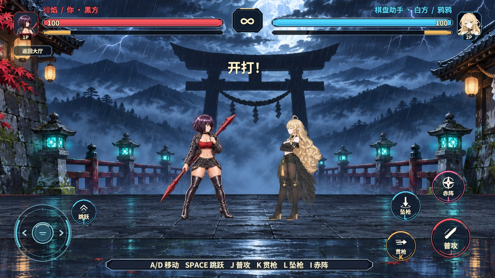
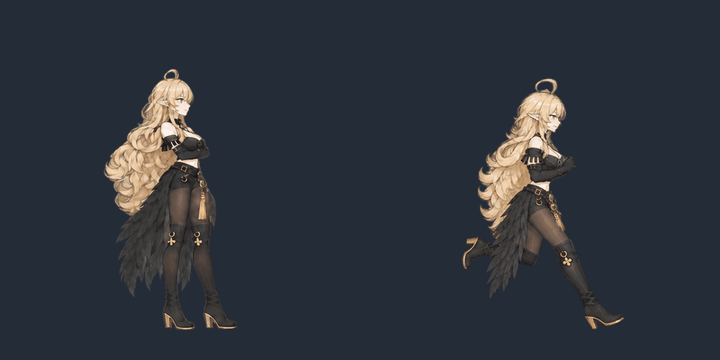
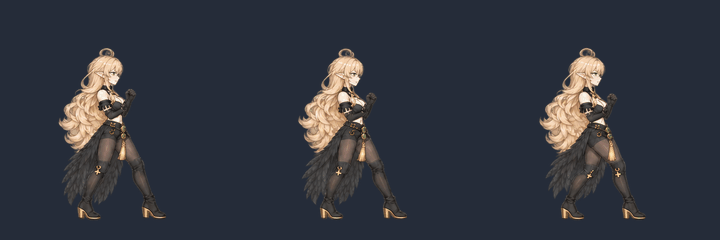
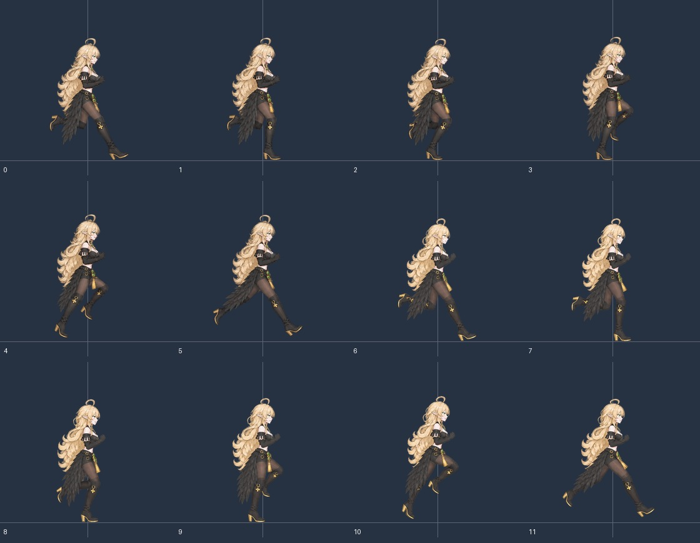
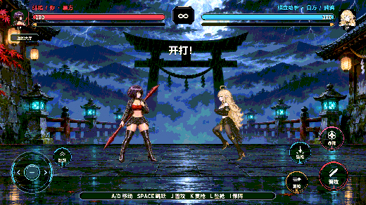
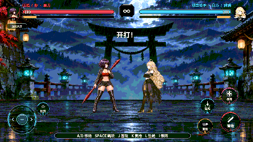

鸦鸦决斗侧面版
本页的普攻动图保留作初版记录。查看按最新正面、侧面原画修订的普攻。
内置 ImageGen 以用户提供的侧面图重画角色动画。角色统一采用单眼可见的侧脸，靴口对齐膝盖上沿，膝上露出原图同色的深色丝袜。靴口的金环花饰和金边鞋跟按侧面参考绘制，角色肩部已移除乌鸦。素材与提示词

姿态与表情
待机抬起下巴并以 28、02 号差分区分平静和微笑。跑动以 02 号为基准，视线朝向对手。腿法接触帧参考 23 号的专注眉眼，施法结合 28 号起手和 02 号释放。受击参考 19 号睁眼，恢复参考 23 号，倒地使用 22 号闭眼。跳跃从收腿到落地保持自然头颈姿势。


跑步与双靴修订
旧八帧中，第 2、3 张的腿部姿势接近，随后脚步突然大幅前伸，左右换脚也不够清楚。旧 GIF 每张实际只保存了 60 毫秒。新版直接以用户的侧面原图为造型参考，按落脚、承重、过渡、蹬地、腾空和前伸两组六帧重新绘制。按原图补绘两腿的膝部靴口、金边鞋底和鞋跟，羽摆经过靴子时保留靴子的可辨轮廓。
Unity 跑步片段为 12 张、24 帧每秒，完整循环半秒。GIF 按累计时间分配 40 和 50 毫秒的帧间隔，半秒与 Unity 对齐。对比透明轮廓，相邻帧变化占两帧合并轮廓面积的中位数从约 40% 降到约 31%。


RevCLI 重新绑定鸦鸦跑步片段并核对 12 张精灵，Windows 图集实际打包 125 张精灵、3 页。以 rev_discover 发现正式入口，rev_call editor.play 启动，rev_run 执行本地人机决斗。两次进场均观察到新版跑步精灵换帧和 02 号头像，运行时错误计数为 0，验收结束后返回大厅并停止 Play。
侧面版首次编辑器验证
| 检查 | 结果 |
|---|---|
| 素材和图集 | 素材目录和 Unity 各有同样的 47 张新版 400×400 透明切片。RevCLI 的 game.pvp.duel-atlas 校验了双席绑定和白方 11 组动作的帧序。Windows 图集打包了 121 张精灵，共 3 页。 |
| 冷启动及重进 | Unity 2022.3.15f1c1 的真实 AB 模式进入本地人机决斗，观察到新版待机、跑动和掠羽。再次进入决斗后确认待机帧和 28 号头像落屏。运行期错误计数为 0。 |
| 验证入口 | rev_discover 发现正式入口，rev_call editor.play 从大厅启动。rev_run 调用 围棋对战/本地人机决斗，以 围棋对战/暂停决斗敌人AI 参数 1 查看待机、参数 0 恢复动作。退出后返回大厅并停止 Play。 |
Revolution 的场景流程和验收入口支持在既有决斗场景中验证资源更换。本次运行期实测范围为 Windows Editor 的本地人机决斗。
